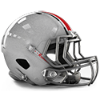
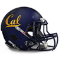
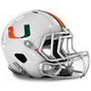
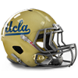
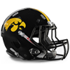

Army
Army Cambridge
Cambridge Heidelberg
Heidelberg Kings College London
Kings College London Maryland
Maryland Navy
Navy Otterbein
Otterbein Penn State
Penn State Rutgers
Rutgers Syracuse
Syracuse Illinois
Illinois Iowa
Iowa Michigan
Michigan Michigan State
Michigan State Minnesota
Minnesota Nebraska
Nebraska Northwestern
Northwestern Notre Dame
Notre Dame Ohio State
Ohio State Wisconsin
Wisconsin California
California Missouri
Missouri Oklahoma
Oklahoma Oregon
Oregon Stanford
Stanford Texas
Texas Texas A&M
Texas A&M UCLA
UCLA USC
USC Washington
Washington Alabama
Alabama Auburn
Auburn Clemson
Clemson Florida
Florida Florida State
Florida State Georgia
Georgia Kentucky
Kentucky LSU
LSU Miami (FL)
Miami (FL) West Virginia
West VirginiaNorth Senior Bowl announced!
The North has announced their Senior Bowl squad for 1983.
QB FILLER - QB, 0/0, 0 yds, 0 TD
QB FILLER - QB, 0/0, 0 yds, 0 TD
QB FILLER - QB, 0/0, 0 yds, 0 TD
RB FILLER - RB, 0 att, 0 yds, 0 TD
RB FILLER - RB, 5 att, 1 yds, 0 TD
RB FILLER - RB, 0 att, 0 yds, 0 TD
FB FILLER - FB, 3 att, 2 yds, 0 TD
G FILLER - G, 1 Pancakes
G FILLER - G, 4 Pancakes
G FILLER - G, 18 Pancakes
T FILLER - T, 11 Pancakes
T FILLER - T, 24 Pancakes
T FILLER - T, 12 Pancakes
C FILLER - C, 4 Pancakes
C FILLER - C, 31 Pancakes
TE FILLER - TE, 0 rec, 0 yds, 0 TD
TE FILLER - TE, 0 rec, 0 yds, 0 TD
WR FILLER - WR, 0 rec, 0 yds, 0 TD
WR FILLER - WR, 4 rec, 20 yds, 0 TD
WR FILLER - WR, 3 rec, 31 yds, 0 TD
WR FILLER - WR, 11 rec, 130 yds, 2 TD
WR FILLER - WR, 0 rec, 0 yds, 0 TD
CB FILLER - CB,
CB FILLER - CB, 2 Tck
CB FILLER - CB,
LB FILLER - LB,
LB FILLER - LB,
LB FILLER - LB,
LB FILLER - LB,
LB FILLER - LB,
LB FILLER - LB,
DT FILLER - DT, 4 Tck, 2 Sck
DT FILLER - DT, 8 Tck, 3 Sck
DT FILLER - DT, 21 Tck, 2 Sck
DT FILLER - DT, 5 Tck, 2 Sck, 2 FR
DE FILLER - DE,
DE FILLER - DE,
DE FILLER - DE, 42 Tck, 2 Sck
FS FILLER - FS,
FS FILLER - FS, 3 Tck
SS FILLER - SS,
SS FILLER - SS,
K FILLER - K, 17/31 FG
P FILLER - P, 4278 yards, 37.2 avg, 32 inside 20
South Senior Bowl announced!
The South has announced their Senior Bowl squad for 1983.
QB FILLER - QB, 0/0, 0 yds, 0 TD
QB FILLER - QB, 0/0, 0 yds, 0 TD
QB FILLER - QB, 0/0, 0 yds, 0 TD
RB FILLER - RB, 0 att, 0 yds, 0 TD
RB FILLER - RB, 0 att, 0 yds, 0 TD
RB FILLER - RB, 24 att, 7 yds, 0 TD
FB FILLER - FB, 0 att, 0 yds, 0 TD
G FILLER - G, 17 Pancakes
G FILLER - G, 11 Pancakes
G FILLER - G, 20 Pancakes
T FILLER - T, 0 Pancakes
T FILLER - T, 3 Pancakes
T FILLER - T, 4 Pancakes
C FILLER - C, 8 Pancakes
C FILLER - C, 10 Pancakes
TE FILLER - TE, 0 rec, 0 yds, 0 TD
TE FILLER - TE, 0 rec, 0 yds, 0 TD
WR FILLER - WR, 0 rec, 0 yds, 0 TD
WR FILLER - WR, 0 rec, 0 yds, 0 TD
WR FILLER - WR, 0 rec, 0 yds, 0 TD
WR FILLER - WR, 0 rec, 0 yds, 0 TD
WR FILLER - WR, 0 rec, 0 yds, 0 TD
CB FILLER - CB,
CB FILLER - CB, 4 Tck, 1 Blk FG
CB FILLER - CB, 4 Tck
LB FILLER - LB,
LB FILLER - LB,
LB FILLER - LB,
LB FILLER - LB,
LB FILLER - LB,
LB FILLER - LB,
DT FILLER - DT,
DT FILLER - DT, 4 Tck, 1 Sck
DT FILLER - DT, 1 Tck
DT FILLER - DT, 5 Tck
DE FILLER - DE,
DE FILLER - DE, 17 Tck, 1 Sck
DE FILLER - DE, 1 Tck, 1 Sck
FS FILLER - FS, 7 Tck, 1 Int, 1 Def TD
FS FILLER - FS, 7 Tck
SS FILLER - SS,
SS FILLER - SS,
K FILLER - K, 24/36 FG
P FILLER - P, 3942 yards, 36.2 avg, 34 inside 20
Prestige Updates
Gained Prestige:
+ 1 : Michigan Wolverines
+ 1 : Stanford Cardinal
+ 1 : West Virginia Mountaineers
+ 2 : Army Black Knights
+ 2 : Florida Gators
+ 2 : Georgia Bulldogs
+ 2 : Minnesota Golden Gophers
+ 3 : Maryland Terrapins
+ 3 : Penn State Nittany Lions
+ 4 : Rutgers Scarlet Knights
Lost Prestige:
-1 : Kentucky Wildcats
-1 : Kings College London Regents
-1 : USC Trojans
-1 : Wisconsin Badgers
-2 : Alabama Crimson Tide
-2 : Auburn Tigers
-2 : Illinois Fighting Illini
-2 : LSU Tigers
-2 : Miami (FL) Hurricanes
-2 : Notre Dame Fighting Irish
-2 : Texas A&M Aggies
-2 : Washington Huskies
-3 : Cambridge Blues
-3 : Iowa Hawkeyes
-3 : Navy Midshipmen
-3 : Ohio State Buckeyes
-3 : UCLA Bruins
-4 : Florida State Seminoles
-4 : Heidelberg Student Princes
-4 : Missouri Tigers
1983 Ray Guy Award Award
 Rutgers Scarlet Knights P, Sam Koch has won the Ray Guy Award award for 1983.
Rutgers Scarlet Knights P, Sam Koch has won the Ray Guy Award award for 1983.
1983 Lou Groza Award Award

Ohio State Buckeyes K, Jan Stenerud has won the Lou Groza Award award for 1983.1983 Jim Thorpe Award Award
 Maryland Terrapins CB, Darrell Green has won the Jim Thorpe Award award for 1983.
Maryland Terrapins CB, Darrell Green has won the Jim Thorpe Award award for 1983.
1983 Butkus Award Award

California Golden Bears LB, Ron Rivera has won the Butkus Award award for 1983.1983 Bednarik Award Award
Rutgers Scarlet Knights DE, Art Still has won the Bednarik Award award for 1983.
1983 Outland Trophy Award
 Oklahoma Sooners T, Jim Lachey has won the Outland Trophy award for 1983.
Oklahoma Sooners T, Jim Lachey has won the Outland Trophy award for 1983.
1983 John Mackey Award Award
 West Virginia Mountaineers TE, Todd Christensen has won the John Mackey Award award for 1983.
West Virginia Mountaineers TE, Todd Christensen has won the John Mackey Award award for 1983.
1983 Biletnikoff Award Award
 Penn State Nittany Lions WR, Miles Austin has won the Biletnikoff Award award for 1983.
Penn State Nittany Lions WR, Miles Austin has won the Biletnikoff Award award for 1983.
1983 Johnny Unitas Golden Arm Award Award
Rutgers Scarlet Knights QB, QB FILLER has won the Johnny Unitas Golden Arm Award award for 1983.
1983 Davey O'Brien Award Award
Rutgers Scarlet Knights QB, Neil Lomax has won the Davey O'Brien Award award for 1983.
1983 Doak Walker Award Award
Rutgers Scarlet Knights RB, Greg Bell has won the Doak Walker Award award for 1983.
1983 Bronko Nagurski Trophy Award
Maryland Terrapins CB, Darrell Green has won the Bronko Nagurski Trophy award for 1983.
1983 Walter Camp Award Award
Penn State Nittany Lions WR, Miles Austin has won the Walter Camp Award award for 1983.
1983 Heisman Trophy Award
Penn State Nittany Lions WR, Miles Austin has won the Heisman Trophy award for 1983.
Conference Players of the Year:
----International Conference----
Defense:
Cromartie, A. - CB, PSU (46 Tck, 3 Int, 2 Def TD)
Offense:
Andre Reed - WR, SYR (75 rec, 1189 yds, 8 TD)
----Big Ten Conference----
Defense:
Lankford, P. - CB, OSU (46 Tck, 5 Int, 2 Def TD, 1 FR)
Offense:
Bill Kenney - QB, ILL (244/445, 3459 yds, 25 TD)
----Pacific 10 Conference----
Defense:
Carter, R. - CB, TAMU (51 Tck, 4 Int, 2 Def TD, 1 FR)
Offense:
Eddie George - RB, UCLA (198 att, 774 yds, 0 TD)
----Southeastern Conference----
Defense:
Wright, L. - CB, AUB (83 Tck, 6 Int, 1 Def TD, 1 FR)
Offense:
George Adams - RB, FSU (225 att, 431 yds, 1 TD, 6 rec, 18 yds, 0 TD)
All-American Team Announced
1983 All-American Team
QB Dan Marino - Maryland Terrapins (182/316, 2690 yds, 31 TD)
RB Greg Bell - Rutgers Scarlet Knights (222 att, 1317 yds, 14 TD, 17 rec, 114 yds, 1 TD)
FB Kevin Mack - UCLA Bruins (77 att, 303 yds, 12 TD, 19 rec, 145 yds, 0 TD)
TE Todd Christensen - West Virginia Mountaineers (62 rec, 782 yds, 6 TD)
WR Miles Austin - Penn State Nittany Lions (82 rec, 1529 yds, 10 TD)
C Doug Smith - Oklahoma Sooners (59 Pancakes)
G Roy Foster - Alabama Crimson Tide (57 Pancakes)
T Jim Lachey - Oklahoma Sooners (82 Pancakes)
DT Russell Maryland - California Golden Bears (48 Tck, 10 Sck, 1 FR)
DE Art Still - Rutgers Scarlet Knights (32 Tck, 9 Sck)
LB Ron Rivera - California Golden Bears (86 Tck, 2 Sck, 4 Int, 1 Def TD, 1 Sfty)
CB Darrell Green - Maryland Terrapins (76 Tck, 10 Int, 2 Def TD, 2 FR)
SS Emlen Tunnell - Missouri Tigers (105 Tck, 1 Sck, 3 Int, 1 Def TD, 2 FR)
FS Tim Fox - Wisconsin Badgers (71 Tck, 2 Sck, 5 Int)
K Jan Stenerud - Ohio State Buckeyes (31/34 FG)
P Josh Miller - Auburn Tigers (4985 yards, 41.5 avg, 49 inside 20)
Southeastern Conference All-Conference Team Announced
1983 Southeastern Conference All-Conference Team.
QB Joe Montana - QB - West Virginia Mountaineers (256/376, 3041 yds, 30 TD)
RB O.J. Simpson - RB - West Virginia Mountaineers (241 att, 1280 yds, 13 TD, 5 rec, 106 yds, 1 TD)
FB Michael Haddix - FB - Georgia Bulldogs (0 att, 0 yds, 0 TD)
TE Todd Christensen - TE - West Virginia Mountaineers (62 rec, 782 yds, 6 TD)
WR Marques Colston - WR - Georgia Bulldogs (44 rec, 1020 yds, 13 TD)
C David Carter - C - Georgia Bulldogs (50 Pancakes)
G Roy Foster - G - Alabama Crimson Tide (57 Pancakes)
T D'Brickashaw Ferguson - T - Alabama Crimson Tide (77 Pancakes)
DT Darryl Grant - DT - Miami (FL) Hurricanes (37 Tck, 4 Sck, 1 Def TD, 1 FR)
DE Edmund Nelson - DE - Florida Gators (35 Tck, 3 Sck, 1 Sfty, 2 FR)
LB Matt Millen - LB - Auburn Tigers (102 Tck, 1 Sck, 2 Int)
CB Louis Wright - CB - Auburn Tigers (83 Tck, 6 Int, 1 Def TD, 1 FR)
SS Brian Dawkins - SS - LSU Tigers (99 Tck, 3 Sck, 1 Int, 3 FR)
FS Tramon Williams - FS - Alabama Crimson Tide (66 Tck, 2 Sck, 1 Int, 1 Def TD)
K K FILLER - K - Clemson Tigers (24/36 FG)
P Josh Miller - P - Auburn Tigers (4985 yards, 41.5 avg, 49 inside 20)
Pacific 10 Conference All-Conference Team Announced
1983 Pacific 10 Conference All-Conference Team.
QB Johnny Unitas - QB - USC Trojans (169/283, 2325 yds, 20 TD)
RB Eric Dickerson - RB - Texas A&M Aggies (296 att, 1159 yds, 7 TD, 12 rec, 106 yds, 1 TD)
FB Kevin Mack - FB - UCLA Bruins (77 att, 303 yds, 12 TD, 19 rec, 145 yds, 0 TD)
TE Marcedes Lewis - TE - USC Trojans (48 rec, 704 yds, 3 TD)
WR Henry Ellard - WR - Missouri Tigers (54 rec, 785 yds, 9 TD)
C Doug Smith - C - Oklahoma Sooners (59 Pancakes)
G Chris Kuper - G - Stanford Cardinal (48 Pancakes)
T Jim Lachey - T - Oklahoma Sooners (82 Pancakes)
DT Russell Maryland - DT - California Golden Bears (48 Tck, 10 Sck, 1 FR)
DE Dexter Manley - DE - Texas A&M Aggies (40 Tck, 8 Sck)
LB Ron Rivera - LB - California Golden Bears (86 Tck, 2 Sck, 4 Int, 1 Def TD, 1 Sfty)
CB Eugene Daniel - CB - California Golden Bears (50 Tck, 1 Sck, 6 Int, 1 Def TD, 1 FR)
SS Emlen Tunnell - SS - Missouri Tigers (105 Tck, 1 Sck, 3 Int, 1 Def TD, 2 FR)
FS Gary Fencik - FS - California Golden Bears (86 Tck, 2 Sck, 1 Int, 3 FR)
K Rafael Septien - K - Stanford Cardinal (29/41 FG)
P Jon Ryan - P - Texas A&M Aggies (4425 yards, 44.2 avg, 35 inside 20)
Big Ten Conference All-Conference Team Announced
1983 Big Ten Conference All-Conference Team.
QB Warren Moon - QB - Wisconsin Badgers (240/404, 2537 yds, 19 TD)
RB Terry Allen - RB - Iowa Hawkeyes (236 att, 1188 yds, 7 TD)
FB Tuffy Leemans - FB - Michigan State Spartans (79 att, 221 yds, 8 TD, 5 rec, 75 yds, 1 TD)
TE Bennie Cunningham - TE - Iowa Hawkeyes (47 rec, 564 yds, 3 TD)
WR Terry Glenn - WR - Minnesota Golden Gophers (88 rec, 1137 yds, 5 TD)
C Bill Bryan - C - Minnesota Golden Gophers (53 Pancakes)
G Joe DeLamielleure - G - Notre Dame Fighting Irish (45 Pancakes)
T Jonathan Ogden - T - Michigan Wolverines (79 Pancakes)
DT Hollis Thomas - DT - Illinois Fighting Illini (45 Tck, 4 Sck, 3 FR)
DE Greg Brown - DE - Minnesota Golden Gophers (49 Tck, 11 Sck, 1 FR)
LB E.J. Junior - LB - Ohio State Buckeyes (86 Tck, 3 Sck, 2 Int, 1 Def TD, 3 FR)
CB John Swain - CB - Michigan State Spartans (64 Tck, 5 Int, 1 Def TD)
SS Antoine Bethea - SS - Northwestern Wildcats (86 Tck, 2 Int, 2 Def TD)
FS Tim Fox - FS - Wisconsin Badgers (71 Tck, 2 Sck, 5 Int)
K Jan Stenerud - K - Ohio State Buckeyes (31/34 FG)
P Kent Sullivan - P - Ohio State Buckeyes (5163 yards, 43 avg, 39 inside 20)
International Conference All-Conference Team Announced
1983 International Conference All-Conference Team.
QB Dan Marino - QB - Maryland Terrapins (182/316, 2690 yds, 31 TD)
RB Greg Bell - RB - Rutgers Scarlet Knights (222 att, 1317 yds, 14 TD, 17 rec, 114 yds, 1 TD)
FB Craig James - FB - Army Black Knights (17 att, 69 yds, 4 TD)
TE David Hill - TE - Heidelberg Student Princes (55 rec, 493 yds, 3 TD)
WR Miles Austin - WR - Penn State Nittany Lions (82 rec, 1529 yds, 10 TD)
C Kirk Lowdermilk - C - Penn State Nittany Lions (53 Pancakes)
G Mike Brisiel - G - Rutgers Scarlet Knights (46 Pancakes)
T John Alt - T - Rutgers Scarlet Knights (67 Pancakes)
DT Haloti Ngata - DT - Heidelberg Student Princes (56 Tck, 12 Sck, 3 FR)
DE Art Still - DE - Rutgers Scarlet Knights (32 Tck, 9 Sck)
LB Duane Bickett - LB - Syracuse Orange (102 Tck, 1 Sck, 2 Int, 1 Def TD)
CB Darrell Green - CB - Maryland Terrapins (76 Tck, 10 Int, 2 Def TD, 2 FR)
SS Shaun Gayle - SS - Navy Midshipmen (82 Tck, 2 Sck, 2 Int, 1 FR)
FS James Britt - FS - Navy Midshipmen (64 Tck, 1 Sck, 1 Def TD, 3 FR)
K Ali Haji-Sheikh - K - Army Black Knights (25/33 FG)
P Rohn Stark - P - Army Black Knights (3825 yards, 44.5 avg, 30 inside 20)
Mountaineers becoming the Collinsworth Show?
An individual with connections in the Mountaineers' locker room says that the diva-like antics of Cris Collinsworth - WR is annoying coaches. He does not seem to get that football is a team sport. He always makes everything about him.
West Virginia Mountaineers prestige penalty - 0.05
Bowl Games Recruiting Update
3 players committed this week.
5 star players committed this week: 0.
4 star players committed this week: 0.
3 star players committed this week: 3.
2 star players committed this week: 0.
1 star players committed this week: 0.
0 players ranked in the top 100 recruits committed this week.
The most highly touted prospect committing this week was LB FILLER (a 3 star LB from WALL HS ranked at #591) who committed to Ohio State.
Big Ten Conference was the conference that netted the most recruits this week with a total of 2.
Michigan Wolverines locked down the most prospects this week was as they got 1 recruits to sign.
The highest ranked uncommitted recruit is Jon Beason - LB. He is ranked at #7
Total Recruits committed this season is 535.
Bowl Games Recruiting Update
4 players committed this week.
5 star players committed this week: 2.
4 star players committed this week: 0.
3 star players committed this week: 2.
2 star players committed this week: 0.
1 star players committed this week: 0.
2 players ranked in the top 100 recruits committed this week.
The most highly touted prospect committing this week was James Jones WR (a 5 star WR from CURRY HS ranked at #29) who committed to Northwestern.
Big Ten Conference was the conference that netted the most recruits this week with a total of 2.
Northwestern Wildcats locked down the most prospects this week was as they got 1 recruits to sign.
The highest ranked uncommitted recruit is Jon Beason - LB. He is ranked at #7
Total Recruits committed this season is 532.
Bowl Games Recruiting Update
6 players committed this week.
5 star players committed this week: 0.
4 star players committed this week: 0.
3 star players committed this week: 6.
2 star players committed this week: 0.
1 star players committed this week: 0.
0 players ranked in the top 100 recruits committed this week.
The most highly touted prospect committing this week was LB FILLER (a 3 star LB from NAPA HS ranked at #519) who committed to Florida State.
International Conference was the conference that netted the most recruits this week with a total of 2.
Otterbein Cardinals locked down the most prospects this week was as they got 1 recruits to sign.
The highest ranked uncommitted recruit is Jon Beason - LB. He is ranked at #7
Total Recruits committed this season is 528.
Week 14 Recruiting Update
15 players committed this week.
5 star players committed this week: 0.
4 star players committed this week: 0.
3 star players committed this week: 15.
2 star players committed this week: 0.
1 star players committed this week: 0.
0 players ranked in the top 100 recruits committed this week.
The most highly touted prospect committing this week was DE FILLER (a 3 star DE from CENTRAL LYON HS ranked at #467) who committed to Michigan.
Southeastern Conference was the conference that netted the most recruits this week with a total of 5.
Rutgers Scarlet Knights locked down the most prospects this week was as they got 1 recruits to sign.
The highest ranked uncommitted recruit is Jon Beason - LB. He is ranked at #7
Total Recruits committed this season is 522.
Cooper, Earl (OSU) praised by coaches.
Recent praise from John Gagliardi (HC) is the talk of the day, and now Earl Cooper - TE (OSU) replied. The relationship between Cooper and John Gagliardi (HC) is growing. Especially since the latter reportedly praised the performance of Cooper.
Hawk, A.J. (PSU) furious over warning from Pete Carroll (HC).
A recent warning from Pete Carroll (HC) did not sit well with A.J. Hawk - LB (PSU) according to bloggers following the team. Hawk, A.J. ranted extensively about ongoing discussions of the depth chart and his position on it.
Prestige Updates
Prestige Changes for week 14
Gains:
USC Trojans kept scoring points against the Oregon Ducks : Prestige bonus + 0.05
Losses:
Oregon Ducks were blown out by the USC Trojans : Prestige loss - 0.10
Big Ten Conference News: Top receiver trio?
 The Fighting Illini trio of Mike Quick - WR, Eddie Brown - WR and Eric Martin - WR are currently the leading trio of receivers in the league, with 2592 receiving yards between the three.
The Fighting Illini trio of Mike Quick - WR, Eddie Brown - WR and Eric Martin - WR are currently the leading trio of receivers in the league, with 2592 receiving yards between the three.
Missouri Tigers resigns Scott Appleton as OL Coach
 The Tigers have announced that they have given Scott Appleton a new contract. Appleton will continue to serve as OLCoach for 5 years earning 0.5 million per year.
The Tigers have announced that they have given Scott Appleton a new contract. Appleton will continue to serve as OLCoach for 5 years earning 0.5 million per year.
Week 14: RB Greg Bell (RUT) wins Offensive Player of the Week
In a standout performance, Greg Bell rushed for 157 yards and scored 2 touchdowns, guiding Rutgers Scarlet Knights to a win against Syracuse Orange.
Rutgers Scarlet Knights prestige bonus + 0.05
Week 14: LB Jack Del Rio (FSU) wins Defensive Player of the Week
 Jack Del Rio of the Florida State Seminoles made a significant impact this week, leading the defense in their Gators 45 victory over the Florida State Seminoles. With an impressive 7 tackles and 1 forced fumbles, his performance was pivotal in securing the win.
Jack Del Rio of the Florida State Seminoles made a significant impact this week, leading the defense in their Gators 45 victory over the Florida State Seminoles. With an impressive 7 tackles and 1 forced fumbles, his performance was pivotal in securing the win.
Florida State Seminoles prestige bonus + 0.05
Week 14 : Conference Players of the Week
International Conference Defensive player of the week: Mitch Donahue - LB, CAMB.
International Conference Offensive player of the week: Greg Bell - RB, RUT.
Big Ten Conference Defensive player of the week: Roman Harper - SS, MINN.
Big Ten Conference Offensive player of the week: Terry Allen - RB, IOWA.
Pacific 10 Conference Defensive player of the week: Issiac Holt - SS, CAL.
Pacific 10 Conference Offensive player of the week: Marcus Allen - RB, ORE.
Southeastern Conference Defensive player of the week: Jack Del Rio - LB, FSU.
Southeastern Conference Offensive player of the week: Butch Woolfolk - RB, UGA.
Game Recaps for Week 14
Army Black Knights - 39, Navy Midshipmen - 13
Rutgers Scarlet Knights - 69, Syracuse Orange - 7
Otterbein Cardinals - 34, Heidelberg Student Princes - 10
Maryland Terrapins - 31, Penn State Nittany Lions - 24
Cambridge Blues - 39, Kings College London Regents - 3
Michigan State Spartans - 18, Notre Dame Fighting Irish - 17
Iowa Hawkeyes - 31, Nebraska Cornhuskers - 13
Michigan Wolverines - 16, Ohio State Buckeyes - 8
Minnesota Golden Gophers - 16, Wisconsin Badgers - 13
Northwestern Wildcats - 20, Illinois Fighting Illini - 17
California Golden Bears - 37, Stanford Cardinal - 9
Oklahoma Sooners - 30, Missouri Tigers - 7
Texas A&M Aggies - 27, Texas Longhorns - 7
Washington Huskies - 31, Oregon Ducks - 24
USC Trojans - 38, UCLA Bruins - 13
Georgia Bulldogs - 27, Clemson Tigers - 22
West Virginia Mountaineers - 20, Kentucky Wildcats - 10
Auburn Tigers - 10, Alabama Crimson Tide - 6
LSU Tigers - 21, Miami (FL) Hurricanes - 0
Florida Gators - 45, Florida State Seminoles - 14
Week 14 Recruiting Update
45 players committed this week.
5 star players committed this week: 7.
4 star players committed this week: 5.
3 star players committed this week: 33.
2 star players committed this week: 0.
1 star players committed this week: 0.
9 players ranked in the top 100 recruits committed this week.
The most highly touted prospect committing this week was LaMarr Woodley (a 5 star LB from JENKINS HS ranked at #3) who committed to Clemson.
Southeastern Conference was the conference that netted the most recruits this week with a total of 14.
Syracuse Orange locked down the most prospects this week was as they got 4 recruits to sign.
The highest ranked uncommitted recruit is Jon Beason - LB. He is ranked at #7
Total Recruits committed this season is 507.
LaMarr Woodley - LB commits to Clemson.
LaMarr Woodley has committed to the Tigers.
Woodley is widely considered to be one of the top ten prospects in this years recruiting class, and a lot of eyes have been on the LB from JENKINS HS.
Woodley was also pursued by Minnesota Golden Gophers, Heidelberg Student Princes, Penn State Nittany Lions, Northwestern Wildcats, Ohio State Buckeyes, Kentucky Wildcats, Otterbein Cardinals, and Florida Gators.
David Harris - LB commits to Cambridge.
David Harris has committed to the Blues.
Harris is widely considered to be one of the top ten prospects in this years recruiting class, and a lot of eyes have been on the LB from HOKES BLUFF HS.
Harris was also pursued by Nebraska Cornhuskers, Rutgers Scarlet Knights, Minnesota Golden Gophers, Heidelberg Student Princes, Syracuse Orange, Missouri Tigers, Michigan Wolverines, Florida State Seminoles, and Army Black Knights.
Prestige Updates
Prestige Changes for week 14
Gains:
USC Trojans put the hammer on Oregon Ducks : Prestige bonus + 0.05
Losses:
Oregon Ducks was walked all over by the USC Trojans : Prestige loss - 0.10
League News: Top receiver trio?
The Fighting Illini trio of Mike Quick - WR, Eddie Brown - WR and Eric Martin - WR are currently the leading trio of offensive skill players catching the ball in the league, with 2382 receiving yards between the three.
Wisconsin Badgers pull off the upset!
 The Wisconsin Badgers fans are celebrating after the Badgers took down the Iowa Hawkeyes.
The Wisconsin Badgers fans are celebrating after the Badgers took down the Iowa Hawkeyes.
In a superb effort the Badgers kept at it, and brought home the win. The Hawkeyes are widely considered to be the better of the two programs, but with the Badgers winning the fans are hoping that the Badgers will soon be able to dance with the big boys.
Florida State Seminoles resigns Miguel Smyth as Head Scout
The Seminoles have announced that they have given Miguel Smyth a new contract. Smyth will continue to serve as HeadScout for 3 years earning 0.5 million per year.
LSU Tigers resigns Mike McCoy as DL Coach
 The Tigers have announced that they have given Mike McCoy a new contract. McCoy will continue to serve as DLCoach for 7 years earning 0.5 million per year.
The Tigers have announced that they have given Mike McCoy a new contract. McCoy will continue to serve as DLCoach for 7 years earning 0.5 million per year.
Kentucky Wildcats resigns Jim Grabowski as RB and Receivers Coach
 The Wildcats have announced that they have given Jim Grabowski a new contract. Grabowski will continue to serve as SkillPositionCoach for 3 years earning 0.5 million per year.
The Wildcats have announced that they have given Jim Grabowski a new contract. Grabowski will continue to serve as SkillPositionCoach for 3 years earning 0.5 million per year.
Texas Longhorns resigns Chris Canty as DB Coach
 The Longhorns have announced that they have given Chris Canty a new contract. Canty will continue to serve as DBCoach for 7 years earning 0.5 million per year.
The Longhorns have announced that they have given Chris Canty a new contract. Canty will continue to serve as DBCoach for 7 years earning 0.5 million per year.
Washington Huskies resigns Biggie Munn as Offensive Coordinator
 The Huskies have announced that they have given Biggie Munn a new contract. Munn will continue to serve as OffensiveCoordinator for 4 years earning 2 million per year.
The Huskies have announced that they have given Biggie Munn a new contract. Munn will continue to serve as OffensiveCoordinator for 4 years earning 2 million per year.
Notre Dame Fighting Irish resigns Moises West as Head Recruiter
 The Fighting Irish have announced that they have given Moises West a new contract. West will continue to serve as HeadRecruiter for 5 years earning 0.5 million per year.
The Fighting Irish have announced that they have given Moises West a new contract. West will continue to serve as HeadRecruiter for 5 years earning 0.5 million per year.
Syracuse Orange resigns Chuck Long as QB Coach
 The Orange have announced that they have given Chuck Long a new contract. Long will continue to serve as QBCoach for 4 years earning 0.5 million per year.
The Orange have announced that they have given Chuck Long a new contract. Long will continue to serve as QBCoach for 4 years earning 0.5 million per year.
Week 13: WR Marvin Harrison (WVU) wins Offensive Player of the Week
Marvin Harrison shone brightly in West Virginia Mountaineers's victory over Florida State Seminoles, making 8 catches for 119 yards and 3 touchdowns. His efforts led to a decisive 48-13 win, making him this week's Offensive Player of the Week.
West Virginia Mountaineers prestige bonus + 0.05
Week 13: DE Curtis Green (KCL) wins Defensive Player of the Week
 DE Green absolutely dominated in the Regents 21-11 game with the Syracuse Orange. He finished with 1 Tck.
DE Green absolutely dominated in the Regents 21-11 game with the Syracuse Orange. He finished with 1 Tck.
Kings College London Regents prestige bonus + 0.05
Week 13 : Conference Players of the Week
International Conference Defensive player of the week: Curtis Green - DE, KCL.
International Conference Offensive player of the week: Brandon Marshall - WR, RUT.
Big Ten Conference Defensive player of the week: Mike Flores - DE, WIS.
Big Ten Conference Offensive player of the week: Terry Glenn - WR, MINN.
Pacific 10 Conference Defensive player of the week: Don Rogers - FS, USC.
Pacific 10 Conference Offensive player of the week: Eddie Kennison - WR, MIZZOU.
Southeastern Conference Defensive player of the week: Brett Maxie - CB, UK.
Southeastern Conference Offensive player of the week: Marvin Harrison - WR, WVU.
Game Recaps for Week 13
Northwestern Wildcats - 32, Nebraska Cornhuskers - 25
Maryland Terrapins - 28, Cambridge Blues - 3
Kentucky Wildcats - 28, Miami (FL) Hurricanes - 0
Florida Gators - 23, LSU Tigers - 13
Oklahoma Sooners - 24, Washington Huskies - 18
Wisconsin Badgers - 20, Iowa Hawkeyes - 17
West Virginia Mountaineers - 48, Florida State Seminoles - 13
Missouri Tigers - 38, UCLA Bruins - 3
Rutgers Scarlet Knights - 33, Heidelberg Student Princes - 27
Minnesota Golden Gophers - 17, Illinois Fighting Illini - 13
Kings College London Regents - 21, Syracuse Orange - 11
USC Trojans - 45, Oregon Ducks - 0
Week 13 Recruiting Update
55 players committed this week.
5 star players committed this week: 4.
4 star players committed this week: 11.
3 star players committed this week: 40.
2 star players committed this week: 0.
1 star players committed this week: 0.
8 players ranked in the top 100 recruits committed this week.
The most highly touted prospect committing this week was Tank Tyler (a 5 star DT from WASHINGTONVILLE HS ranked at #27) who committed to Heidelberg.
Pacific 10 Conference was the conference that netted the most recruits this week with a total of 17.
Cambridge Blues locked down the most prospects this week was as they got 3 recruits to sign.
The highest ranked uncommitted recruit is LaMarr Woodley - LB. He is ranked at #3
Total Recruits committed this season is 462.
Prestige Updates
Prestige Changes for week 13
Losses:
Clemson Tigers were no match for the West Virginia Mountaineers : Prestige loss - 0.05
Big Ten Conference News: Minnesota Golden Gophers: A no Pass Zone.
 Golden Gophers pass defense this year has been dynamite this season, giving up only 1402 in 10 games. Said one defensive coach, ‘To get a group of guys to play like that, that is what every defensive minded coach dreams of.’.
Golden Gophers pass defense this year has been dynamite this season, giving up only 1402 in 10 games. Said one defensive coach, ‘To get a group of guys to play like that, that is what every defensive minded coach dreams of.’.
Syracuse Orange pull off the upset!
The Syracuse Orange have managed an unlikely win against Navy Midshipmen.
The Midshipmen appeared dejected towards the end of the game, while the Orange kept their cool and drove the victory home. Most pundits had expected the Midshipmen to win with ease, and the loss to such an inferior opponent is a tough blow to the lofty expectations for the program. Meanwhile, the Orange fans were celebrating in the street, having had their hopes for the future bolstered at least momentarily.
Florida State Seminoles resigns Ara Parseghian as Head Coach
The Seminoles have announced that they have given Ara Parseghian a new contract. Parseghian will continue to serve as HeadCoach for 7 years earning 4 million per year.
Miami (FL) Hurricanes resigns Sang King as Head Recruiter

The Hurricanes have announced that they have given Sang King a new contract. King will continue to serve as HeadRecruiter for 5 years earning 0.5 million per year.Washington Huskies resigns Jake Grove as OL Coach
The Huskies have announced that they have given Jake Grove a new contract. Grove will continue to serve as OLCoach for 7 years earning 0.5 million per year.
California Golden Bears resigns Ben Tamburello as OL Coach
The Golden Bears have announced that they have given Ben Tamburello a new contract. Tamburello will continue to serve as OLCoach for 4 years earning 0.5 million per year.
Heidelberg Student Princes resigns Derrick Thomas as LB Coach
 The Student Princes have announced that they have given Derrick Thomas a new contract. Thomas will continue to serve as LBCoach for 3 years earning 0.5 million per year.
The Student Princes have announced that they have given Derrick Thomas a new contract. Thomas will continue to serve as LBCoach for 3 years earning 0.5 million per year.
Heidelberg Student Princes resigns JJ Stokes as RB and Receivers Coach
The Student Princes have announced that they have given JJ Stokes a new contract. Stokes will continue to serve as SkillPositionCoach for 4 years earning 0.5 million per year.
Kings College London Regents resigns Mark Herrmann as QB Coach
The Regents have announced that they have given Mark Herrmann a new contract. Herrmann will continue to serve as QBCoach for 6 years earning 0.5 million per year.
Kings College London Regents resigns Don Faurot as Defensive Coordinator
The Regents have announced that they have given Don Faurot a new contract. Faurot will continue to serve as DefensiveCoordinator for 4 years earning 2 million per year.
Week 12: WR Marvin Harrison (WVU) wins Offensive Player of the Week
Harrison's 9 rec, 173 yds, 3 TD effort led the way for the West Virginia Mountaineers. His 173 receiving yards bring his season total to 711 yards with 9 touchdowns on the season.
West Virginia Mountaineers prestige bonus + 0.05
Week 12: CB Dwight Hicks (WVU) wins Defensive Player of the Week
In Week 12 of the 1983, West Virginia Mountaineers's Dwight Hicks made waves with an outstanding defensive display. The defensive back recorded 2 interceptions and 4 tackles, helping propel the Mountaineers to victory against Clemson Tigers. This season, Hicks has become a key player with 3 total picks, highlighting his impact since signing in 0.
West Virginia Mountaineers prestige bonus + 0.05
Week 12 : Conference Players of the Week
International Conference Defensive player of the week: Darrell Green - CB, MD.
International Conference Offensive player of the week: Miles Austin - WR, PSU.
Big Ten Conference Defensive player of the week: Andre Waters - SS, NW.
Big Ten Conference Offensive player of the week: Mike Haynes - WR, ND.
Pacific 10 Conference Defensive player of the week: Ray Horton - CB, TEX.
Pacific 10 Conference Offensive player of the week: Ken Margerum - WR, TEX.
Southeastern Conference Defensive player of the week: Dwight Hicks - CB, WVU.
Southeastern Conference Offensive player of the week: Marvin Harrison - WR, WVU.
Game Recaps for Week 12
Otterbein Cardinals - 27, Penn State Nittany Lions - 24
Army Black Knights - 33, Kings College London Regents - 14
Northwestern Wildcats - 37, Michigan State Spartans - 20
Notre Dame Fighting Irish - 41, Nebraska Cornhuskers - 38
Rutgers Scarlet Knights - 21, Cambridge Blues - 13
Miami (FL) Hurricanes - 14, Auburn Tigers - 3
Florida Gators - 28, Kentucky Wildcats - 6
Texas Longhorns - 24, Washington Huskies - 14
Wisconsin Badgers - 31, Michigan Wolverines - 14
Georgia Bulldogs - 21, Florida State Seminoles - 14
California Golden Bears - 24, UCLA Bruins - 23
West Virginia Mountaineers - 47, Clemson Tigers - 10
Stanford Cardinal - 19, Missouri Tigers - 12
Maryland Terrapins - 38, Heidelberg Student Princes - 10
Iowa Hawkeyes - 30, Illinois Fighting Illini - 9
Syracuse Orange - 13, Navy Midshipmen - 10
USC Trojans - 30, Oklahoma Sooners - 13
Week 12 Recruiting Update
125 players committed this week.
5 star players committed this week: 8.
4 star players committed this week: 35.
3 star players committed this week: 82.
2 star players committed this week: 0.
1 star players committed this week: 0.
21 players ranked in the top 100 recruits committed this week.
The most highly touted prospect committing this week was Darrelle Revis (a 5 star CB from CLARKE CENTRAL HS ranked at #1) who committed to Wisconsin.
Southeastern Conference was the conference that netted the most recruits this week with a total of 39.
Michigan Wolverines locked down the most prospects this week was as they got 7 recruits to sign.
The highest ranked uncommitted recruit is LaMarr Woodley - LB. He is ranked at #3
Total Recruits committed this season is 407.
Art Donovan - DT commits to Minnesota.
Art Donovan has committed to the Golden Gophers.
Donovan is widely considered to be one of the top ten prospects in this years recruiting class, and a lot of eyes have been on the DT from FRANKLIN HS.
Donovan was also pursued by Nebraska Cornhuskers, Kings College London Regents, Wisconsin Badgers, Oklahoma Sooners, Rutgers Scarlet Knights, Syracuse Orange, Northwestern Wildcats, LSU Tigers, Penn State Nittany Lions, Florida State Seminoles, Notre Dame Fighting Irish, Missouri Tigers, Otterbein Cardinals, Washington Huskies, West Virginia Mountaineers, Army Black Knights, Iowa Hawkeyes, and Heidelberg Student Princes.
Marshal Yanda - G commits to Oklahoma.
Marshal Yanda has committed to the Sooners.
Yanda is widely considered to be one of the top ten prospects in this years recruiting class, and a lot of eyes have been on the G from GENTRY HS.
Yanda was also pursued by LSU Tigers, Alabama Crimson Tide, Wisconsin Badgers, Rutgers Scarlet Knights, Minnesota Golden Gophers, USC Trojans, Michigan Wolverines, Miami (FL) Hurricanes, Washington Huskies, Auburn Tigers, Iowa Hawkeyes, and Cambridge Blues.
Joe Thomas - T commits to Oklahoma.
Joe Thomas has committed to the Sooners.
Thomas is widely considered to be one of the top ten prospects in this years recruiting class, and a lot of eyes have been on the T from POMPANO BEACH HS.
Thomas was also pursued by Miami (FL) Hurricanes, Minnesota Golden Gophers, LSU Tigers, Michigan Wolverines, Texas Longhorns, Florida Gators, Syracuse Orange, Kentucky Wildcats, Ohio State Buckeyes, and Florida State Seminoles.
Calvin Johnson - WR commits to Kings College London.
Calvin Johnson has committed to the Regents.
Johnson is widely considered to be one of the top ten prospects in this years recruiting class, and a lot of eyes have been on the WR from SPRINGFIELD CENTRAL HS.
Johnson was also pursued by Michigan State Spartans, Heidelberg Student Princes, Cambridge Blues, Northwestern Wildcats, Ohio State Buckeyes, Illinois Fighting Illini, West Virginia Mountaineers, and Auburn Tigers.
Darrelle Revis - CB commits to Wisconsin.
Darrelle Revis has committed to the Badgers.
Revis is widely considered to be one of the top ten prospects in this years recruiting class, and a lot of eyes have been on the CB from CLARKE CENTRAL HS.
Revis was also pursued by Oklahoma Sooners, Nebraska Cornhuskers, and Missouri Tigers.
Great relationship between Kyle Clifton - LB and Ara Parseghian (HC) (FSU).
Kyle Clifton - LB (FSU) revealed on social media recent praise from Ara Parseghian (HC). Clifton was happy with the praise from the coaching staff. Needless to say.
Prestige Updates
Prestige Changes for week 12
Losses:
Army Black Knights got trampled by the Rutgers Scarlet Knights : Prestige loss - 0.05
Clemson Tigers were blown out by the Alabama Crimson Tide : Prestige loss - 0.05
Big Ten Conference News: Big boys shows the way for the Wolverines.
 The big men from Wolverines are winning the war in the trenches this year. They’ve given up only 9 sacks in 10 games while collecting 216 pancakes.
The big men from Wolverines are winning the war in the trenches this year. They’ve given up only 9 sacks in 10 games while collecting 216 pancakes.
Washington Huskies Catch the Missouri Tigers by surprise!
The Washington Huskies surprises everyone with an unlikely road win against Missouri Tigers.
The Tigers never manage to take control of the game, while the Huskies kept grinding and drove the victory home. The Tigers players had expected an easy victory, and this will be a bitter loss and a tough blow to the self-respect of the program. Meanwhile the Huskies fans are ecstatic and are already entertaining thoughts about a cinderella future.
Penn State Nittany Lions upset the Navy Midshipmen!
The Penn State Nittany Lions fans are celebrating after the Nittany Lions took down the Navy Midshipmen.
In a superb effort the Nittany Lions kept at it, and brought home the win. The Midshipmen are widely considered to be the better of the two programs, but with the Nittany Lions winning the fans are hoping that the Nittany Lions will soon be able to dance with the big boys.
West Virginia Mountaineers resigns John McKay as Head Coach
The Mountaineers have announced that they have given John McKay a new contract. McKay will continue to serve as HeadCoach for 3 years earning 4 million per year.
Florida State Seminoles resigns Russell Carter as DB Coach
The Seminoles have announced that they have given Russell Carter a new contract. Carter will continue to serve as DBCoach for 6 years earning 0.5 million per year.
Florida State Seminoles resigns Billy Nicks as Defensive Coordinator
The Seminoles have announced that they have given Billy Nicks a new contract. Nicks will continue to serve as DefensiveCoordinator for 4 years earning 2.5 million per year.
Georgia Bulldogs resigns Andre Rison as RB and Receivers Coach
 The Bulldogs have announced that they have given Andre Rison a new contract. Rison will continue to serve as SkillPositionCoach for 5 years earning 0.5 million per year.
The Bulldogs have announced that they have given Andre Rison a new contract. Rison will continue to serve as SkillPositionCoach for 5 years earning 0.5 million per year.
LSU Tigers resigns Ricky Bell as RB and Receivers Coach
The Tigers have announced that they have given Ricky Bell a new contract. Bell will continue to serve as SkillPositionCoach for 4 years earning 0.5 million per year.
Alabama Crimson Tide resigns Tim Green as DL Coach
 The Crimson Tide have announced that they have given Tim Green a new contract. Green will continue to serve as DLCoach for 5 years earning 0.5 million per year.
The Crimson Tide have announced that they have given Tim Green a new contract. Green will continue to serve as DLCoach for 5 years earning 0.5 million per year.
Kentucky Wildcats resigns Les Miles as Special Teams Coach
The Wildcats have announced that they have given Les Miles a new contract. Miles will continue to serve as SpecialTeamsCoach for 4 years earning 0.5 million per year.
Clemson Tigers resigns Bennie Owen as Defensive Coordinator
The Tigers have announced that they have given Bennie Owen a new contract. Owen will continue to serve as DefensiveCoordinator for 4 years earning 2.5 million per year.
Oklahoma Sooners resigns Alfred Williams as LB Coach
The Sooners have announced that they have given Alfred Williams a new contract. Williams will continue to serve as LBCoach for 6 years earning 0.5 million per year.
USC Trojans resigns Chris Zorich as DL Coach
 The Trojans have announced that they have given Chris Zorich a new contract. Zorich will continue to serve as DLCoach for 8 years earning 0.5 million per year.
The Trojans have announced that they have given Chris Zorich a new contract. Zorich will continue to serve as DLCoach for 8 years earning 0.5 million per year.
Oregon Ducks resigns Tony Mandarich as OL Coach
 The Ducks have announced that they have given Tony Mandarich a new contract. Mandarich will continue to serve as OLCoach for 3 years earning 0.5 million per year.
The Ducks have announced that they have given Tony Mandarich a new contract. Mandarich will continue to serve as OLCoach for 3 years earning 0.5 million per year.
Minnesota Golden Gophers resigns Dan Marino as QB Coach
The Golden Gophers have announced that they have given Dan Marino a new contract. Marino will continue to serve as QBCoach for 3 years earning 0.5 million per year.
Michigan Wolverines resigns Frank Kush as Defensive Coordinator
The Wolverines have announced that they have given Frank Kush a new contract. Kush will continue to serve as DefensiveCoordinator for 5 years earning 1 million per year.
Cambridge Blues resigns Eric Still as OL Coach
The Blues have announced that they have given Eric Still a new contract. Still will continue to serve as OLCoach for 4 years earning 0.5 million per year.
Week 11: WR Charlie Joiner (ORE) wins Offensive Player of the Week
Charlie Joiner had an electrifying game with 4 touchdowns and 166 yards, leading Oregon Ducks past UCLA Bruins with a score of 46-43.
Oregon Ducks prestige bonus + 0.05
Week 11: LB Ray Lewis (UGA) wins Defensive Player of the Week
In an electrifying performance, Ray Lewis of the Georgia Bulldogs showcased his skills during the Bulldogs victory over the Kentucky Wildcats. With 8 tackles and 0 sacks, he proved to be a defensive powerhouse, helping secure the win with a score of 41 to 6.
Georgia Bulldogs prestige bonus + 0.05
Week 11 : Conference Players of the Week
International Conference Defensive player of the week: Mike Harden - CB, SYR.
International Conference Offensive player of the week: Greg Bell - RB, RUT.
Big Ten Conference Defensive player of the week: Louis Breeden - CB, ND.
Big Ten Conference Offensive player of the week: Gary Clark - WR, IOWA.
Pacific 10 Conference Defensive player of the week: Jerome Henderson - FS, STAN.
Pacific 10 Conference Offensive player of the week: Charlie Joiner - WR, ORE.
Southeastern Conference Defensive player of the week: Ray Lewis - LB, UGA.
Southeastern Conference Offensive player of the week: Marques Colston - WR, UGA.
Game Recaps for Week 11
Oklahoma Sooners - 37, California Golden Bears - 3
Rutgers Scarlet Knights - 65, Army Black Knights - 7
Iowa Hawkeyes - 36, Michigan State Spartans - 13
Penn State Nittany Lions - 17, Navy Midshipmen - 13
Maryland Terrapins - 24, Kings College London Regents - 14
Georgia Bulldogs - 41, Kentucky Wildcats - 6
Nebraska Cornhuskers - 19, Wisconsin Badgers - 6
Alabama Crimson Tide - 56, Clemson Tigers - 12
Ohio State Buckeyes - 33, Notre Dame Fighting Irish - 14
Northwestern Wildcats - 14, Minnesota Golden Gophers - 6
LSU Tigers - 34, Florida State Seminoles - 20
Stanford Cardinal - 31, Texas A&M Aggies - 12
Oregon Ducks - 46, UCLA Bruins - 43
West Virginia Mountaineers - 30, Miami (FL) Hurricanes - 10
Washington Huskies - 19, Missouri Tigers - 16
Syracuse Orange - 24, Heidelberg Student Princes - 19
Week 11: LB John Mobley (STAN) has suffered a major injury!
 Stanford Cardinal's linebacker John Mobley suffered an injury during practice, diagnosed as a Ruptured Disc (Back). The team is hopeful for a quick recovery to keep their defense intact.
Stanford Cardinal's linebacker John Mobley suffered an injury during practice, diagnosed as a Ruptured Disc (Back). The team is hopeful for a quick recovery to keep their defense intact.
Recruiting Watch With Darren Francis: Pierre Thomas - RB
Welcome my cohort of football fans, I am excited to give you more Recruiting Watch With Darren Francis. For this edition, I give you a review of Pierre Thomas - RB. Thomas is an intriguing RB, coming out of MT. VERNON HS, IN. His ranking of 83 nationally, makes him a 4 star recruit. He is 19 years old, weighs 210 pounds and is 5' 11" tall. Alright, let us get down to business!
Understandably, Pierre Thomas has attracted a lot of recruiters. Local news report that the following teams have been in touch with him: Stanford Cardinal, Rutgers Scarlet Knights, Maryland Terrapins, LSU Tigers, Kings College London Regents, Syracuse Orange, Ohio State Buckeyes, Washington Huskies, Texas Longhorns.
Persons familiar with his thinking claim that Thomas will likely commit to the Syracuse Orange.
Week 11 Recruiting Update
14 players committed this week.
5 star players committed this week: 1.
4 star players committed this week: 6.
3 star players committed this week: 7.
2 star players committed this week: 0.
1 star players committed this week: 0.
2 players ranked in the top 100 recruits committed this week.
The most highly touted prospect committing this week was Patrick Willis (a 5 star LB from KLEIN COLLINS HS ranked at #8) who committed to Texas A&M.
International Conference was the conference that netted the most recruits this week with a total of 6.
Syracuse Orange locked down the most prospects this week was as they got 2 recruits to sign.
The highest ranked uncommitted recruit is Darrelle Revis - CB. He is ranked at #1
Total Recruits committed this season is 282.
Patrick Willis - LB commits to Texas A&M.
 Patrick Willis has committed to the Aggies.
Patrick Willis has committed to the Aggies.
Willis is widely considered to be one of the top ten prospects in this years recruiting class, and a lot of eyes have been on the LB from KLEIN COLLINS HS.
Willis was also pursued by Nebraska Cornhuskers, Minnesota Golden Gophers, Northwestern Wildcats, Michigan Wolverines, and Florida State Seminoles.
Montana, Joe (WVU) furious over criticism from John McKay (HC).
Joe Montana - QB (WVU) discussed in an interview recent criticism from John McKay (HC). Montana was upset with criticism from the coaching staff. 'This is a team sport. They should not be singling out people in this way' Montana said.
Southeastern Conference News: Kentucky Wildcats: A no Pass Zone.
Wildcats pass defense this year has been tremendous this season, giving up only 1241 in 8 games. Best of luck to any quarterbacks unlucky enough to get matched up with these killers..
Oregon Ducks upset the Stanford Cardinal!
With an outstanding effort the Oregon Ducks pull off the upset against Stanford Cardinal.
Everyone had expected the Stanford Cardinal to handle the Oregon Ducks with ease, but the Ducks just wanted it more. This was really a must win game for the Cardinal, and the loss will surely put a dent in their confidence.
West Virginia Mountaineers resigns Greg Marx as DL Coach
The Mountaineers have announced that they have given Greg Marx a new contract. Marx will continue to serve as DLCoach for 3 years earning 0.5 million per year.
Georgia Bulldogs resigns Mike Ngo as QB Coach
The Bulldogs have announced that they have given Mike Ngo a new contract. Ngo will continue to serve as QBCoach for 5 years earning 0.5 million per year.
Georgia Bulldogs resigns Brian Allred as Head Recruiter
The Bulldogs have announced that they have given Brian Allred a new contract. Allred will continue to serve as HeadRecruiter for 3 years earning 1 million per year.
Georgia Bulldogs resigns Frank Cavanaugh as Defensive Coordinator
The Bulldogs have announced that they have given Frank Cavanaugh a new contract. Cavanaugh will continue to serve as DefensiveCoordinator for 3 years earning 3 million per year.
Miami (FL) Hurricanes resigns Earl Campbell as RB and Receivers Coach
The Hurricanes have announced that they have given Earl Campbell a new contract. Campbell will continue to serve as SkillPositionCoach for 6 years earning 0.5 million per year.
Kentucky Wildcats resigns Chuck Bednarik as LB Coach
The Wildcats have announced that they have given Chuck Bednarik a new contract. Bednarik will continue to serve as LBCoach for 5 years earning 0.5 million per year.
Oklahoma Sooners resigns Joseph Brunner as Head Scout
The Sooners have announced that they have given Joseph Brunner a new contract. Brunner will continue to serve as HeadScout for 6 years earning 0.5 million per year.
USC Trojans resigns Clint Frank as QB Coach
The Trojans have announced that they have given Clint Frank a new contract. Frank will continue to serve as QBCoach for 6 years earning 0.5 million per year.
UCLA Bruins resigns Sean Taylor as DB Coach

The Bruins have announced that they have given Sean Taylor a new contract. Taylor will continue to serve as DBCoach for 4 years earning 0.5 million per year.Ohio State Buckeyes resigns Daniel Whitten as Head Recruiter
The Buckeyes have announced that they have given Daniel Whitten a new contract. Whitten will continue to serve as HeadRecruiter for 4 years earning 0.5 million per year.
Iowa Hawkeyes resigns Nacho Albergamo as OL Coach

The Hawkeyes have announced that they have given Nacho Albergamo a new contract. Albergamo will continue to serve as OLCoach for 6 years earning 0.5 million per year. The Tigers have announced that they have given Richard Gonzales a new contract. Gonzales will continue to serve as HeadScout for 4 years earning 0.5 million per year.
The Tigers have announced that they have given Richard Gonzales a new contract. Gonzales will continue to serve as HeadScout for 4 years earning 0.5 million per year. The Wildcats have announced that they have given Alvin Baxter a new contract. Baxter will continue to serve as HeadRecruiter for 4 years earning 0.5 million per year.
The Wildcats have announced that they have given Alvin Baxter a new contract. Baxter will continue to serve as HeadRecruiter for 4 years earning 0.5 million per year. The Spartans have announced that they have given Mike Phipps a new contract. Phipps will continue to serve as QBCoach for 4 years earning 0.5 million per year.
The Spartans have announced that they have given Mike Phipps a new contract. Phipps will continue to serve as QBCoach for 4 years earning 0.5 million per year. The Midshipmen have announced that they have given Bronko Nagurski a new contract. Nagurski will continue to serve as LBCoach for 5 years earning 0.5 million per year.
The Midshipmen have announced that they have given Bronko Nagurski a new contract. Nagurski will continue to serve as LBCoach for 5 years earning 0.5 million per year. The Gators have announced that they have given Ryan Day a new contract. Day will continue to serve as SpecialTeamsCoach for 7 years earning 0.5 million per year.
The Gators have announced that they have given Ryan Day a new contract. Day will continue to serve as SpecialTeamsCoach for 7 years earning 0.5 million per year. The Black Knights have announced that they have given Vinny Testaverde a new contract. Testaverde will continue to serve as QBCoach for 3 years earning 0.5 million per year.
The Black Knights have announced that they have given Vinny Testaverde a new contract. Testaverde will continue to serve as QBCoach for 3 years earning 0.5 million per year. The Cardinals have announced that they have given Carlton McDonald a new contract. McDonald will continue to serve as DBCoach for 4 years earning 0.5 million per year.
The Cardinals have announced that they have given Carlton McDonald a new contract. McDonald will continue to serve as DBCoach for 4 years earning 0.5 million per year. Rumours out of NE indicate that the injury history of Billy Sims - RB is getting to be a worry for the coaching staff. The organization needs everyone to contribute, and are doing their best to help get fack into shape, but the increasing worry is that maybe this is just the new normal when it comes to the RB
Rumours out of NE indicate that the injury history of Billy Sims - RB is getting to be a worry for the coaching staff. The organization needs everyone to contribute, and are doing their best to help get fack into shape, but the increasing worry is that maybe this is just the new normal when it comes to the RB